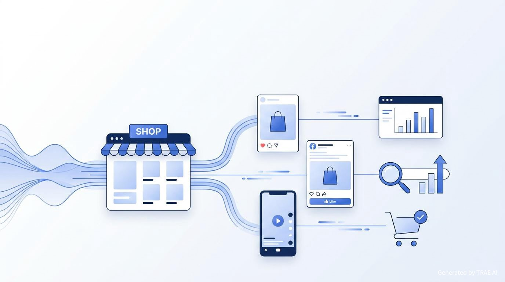

Sito, social, automazioni e SEO
Un progetto full stack pensato per far rendere al massimo il sito del cliente
Questa demo nasce come evoluzione dei progetti mostrati su `pc-work.it` e serve a spiegare in modo semplice come un sito possa diventare uno strumento più forte grazie a social, automazioni, controllo SEO e percorsi di vendita più intelligenti.
Panoramica
Cosa deve capire il cliente entrando in questa demo
È una demo PC Work
La presentazione va letta come estensione dei progetti già pubblicati nel portfolio di `pc-work.it`.
È un progetto full stack
Non solo grafica o pagine vetrina: gestione contenuti, integrazioni, cataloghi, dati e automazioni.
Serve a far crescere il cliente
Social, automazioni e SEO vengono presentati come leve pratiche per generare più contatti e più continuità.
Nasce dal portfolio
Questa proposta si appoggia ai lavori già mostrati da PC Work e ne rappresenta l'evoluzione più completa.
Obiettivo della demo: far percepire che PC Work può realizzare un sito evoluto, capace di collegare visibilità, gestione interna, social e benefici concreti per il cliente finale.
Da portfolio a proposta completa
Questa demo mostra l'evoluzione dei progetti PC Work verso un servizio più strategico e più redditizio per il cliente
Dal sito vetrina al progetto dinamico, fino alla gestione social e alle automazioni: il messaggio è che il sito non deve solo esistere, ma deve aiutare davvero l'attività a lavorare meglio e ottenere più risultati.
Valore per il cliente
I benefici che il cliente può percepire in modo immediato
Più controllo
sito gestito meglio
Il cliente può avere un progetto più ordinato, aggiornabile e costruito attorno al proprio modo di lavorare.
Più visibilità
social + SEO
Il sito dialoga meglio con i social e migliora la sua presenza online grazie a contenuti, struttura e ottimizzazione.
Più automazioni
meno lavoro manuale
Messaggi, contenuti, cataloghi e recupero utenti possono essere gestiti in modo più intelligente e costante.
Più risultati
contatti e conversioni
Il sito smette di essere solo una presenza online e inizia a lavorare meglio per l'acquisizione clienti.
Questa slide va letta come sintesi commerciale: il progetto full stack porta ordine, visibilità, automazione e maggiore capacità di generare richieste.
Flusso operativo
Il sistema corretto parte dal sito e distribuisce valore su tutti i canali
Sito e prodotti
Schede, foto, prezzo, stock e categorie restano aggiornati in un solo punto.
Catalogo social
Meta, Instagram o altri canali leggono in automatico i prodotti già presenti sul sito.
Contenuti e campagne
Post, annunci dinamici e remarketing mostrano i prodotti più giusti alle persone giuste.
CRM e follow-up
Email, WhatsApp o automazioni recuperano interesse, carrelli e richieste non concluse.
Vendita e analisi
Ogni click, contatto e acquisto torna in report chiari, utili per decidere cosa spingere.
Automazioni commerciali
Le automazioni che trasformano il catalogo in vendite
Feed prodotti
Il catalogo del sito aggiorna automaticamente social e piattaforme adv con dati coerenti.
base operativaPubblicazione guidata
I prodotti diventano contenuti, campagne stagionali, novità e promozioni senza ricopiare tutto a mano.
social sellingRemarketing dinamico
Chi visita una scheda o interagisce con un contenuto vede di nuovo il prodotto o una variante correlata.
recupero utentiRecupero carrelli
Messaggi automatici riportano l'utente sul sito con reminder, incentivo o prova sociale.
conversioneDashboard unica
Vendite, campagne, lead e traffico vengono letti insieme, così il team decide con più lucidità.
controlloControllo SEO
La SEO non è separata dalle vendite. È il motore che continua a portare visite senza pagare ogni click
Se il catalogo è ben strutturato, veloce e indicizzato bene, il sito lavora anche quando le campagne rallentano.
Monitoraggio continuo
Cosa controlliamo ogni mese e cosa ottiene il cliente
Controlli SEO e conversione
La parte tecnica e la parte commerciale vengono lette insieme, non come attività separate.
- errori 404, redirect, indicizzazione e sitemap
- title, meta description, H1 e qualità delle schede prodotto
- velocità mobile, performance e segnali di esperienza utente
- keyword che salgono, keyword che calano e pagine da rinforzare
- attribution tra traffico organico, campagne social e vendite
Risultato percepito dal cliente
La reportistica diventa comprensibile e orientata alle decisioni.
Sezione `#portfolio`
Questo progetto va presentato come evoluzione dei lavori già firmati da PC Work
Pizzeria La Romana
Un esempio utile per mostrare come PC Work costruisce siti chiari, veloci e pensati per contatti immediati, prenotazioni e presenza locale.
DP Cars
Qui il cliente vede già la parte gestionale: catalogo dinamico, filtri, area admin e logica più avanzata rispetto a un semplice sito vetrina.
Road Runner
Un riferimento perfetto per raccontare come un progetto possa unire catalogo, dashboard, gestione stock e attenzione alla visibilità online.
Nuova demo full stack
Questa demo si colloca dopo quei progetti: un sito sviluppato per lavorare con social, automazioni, dati e benefici concreti per il cliente finale.
Scenario dimostrativo
L'impatto che il cliente riesce a visualizzare subito con una proposta PC Work più evoluta
Grafico illustrativo utile a mostrare l'equilibrio tra visibilità, automazioni, relazione con i social e crescita commerciale del progetto.
Percorso di progetto
Come PC Work può presentare e vendere questo servizio in modo più forte
Mostrare il portfolio
Si parte dai progetti già presenti sul sito per trasmettere subito credibilità e concretezza.
fiduciaAprire la demo evoluta
Si introduce il nuovo servizio come progetto full stack pensato per rendimento, visibilità e automazioni.
evoluzioneFar vedere i benefici
Il cliente deve capire che il sito può lavorare con social, SEO e percorsi più intelligenti di acquisizione.
valoreChiudere come PC Work
Logo, tono del sito e portfolio devono rendere evidente che la demo è progettata e firmata da PC Work.
brandingFine demo
Sono Carmine, lo sviluppatore. Sarò sempre pronto, in qualsiasi momento, a trovare insieme soluzioni in grado di soddisfare le tue esigenze lavorative.
Ricorda il nostro motto: sviluppare, sviluppare e ancora sviluppare.